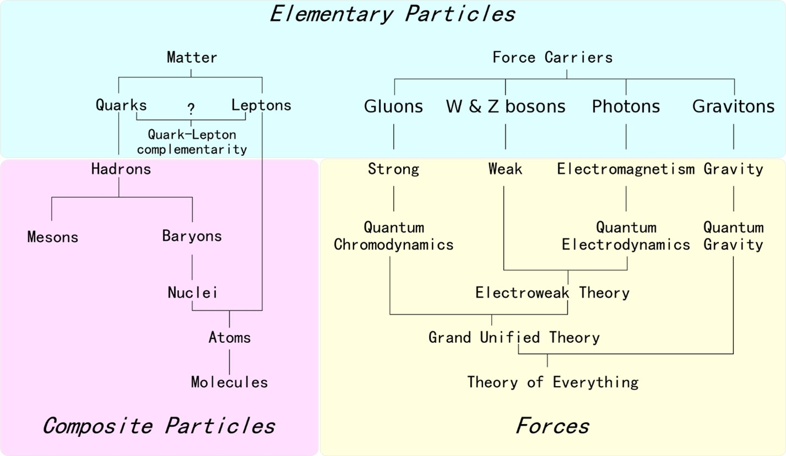
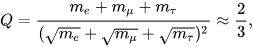
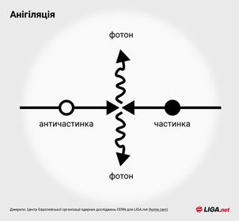

Матерія та Антиматерія
Визначення матерії та антиматерії
Мате́рія (англ. matter, substance) — основа буття, яка проявляється у всій різноманітності і багатогранності об'єктів, процесів, явищ мікро-, макро- і мегасвіту. Існує в русі, розвитку та взаємоперетвореннях.
Традиційно у фізичній картині світу виділяють два фундаментальні види матерії — речовину та фізичні поля. Однак, такий поділ є умовним, оскільки в рамках квантової теорії поля будь-яка частинка описується квантованим фізичним полем. Квантування полів надає їм ознаки корпускулярності. Різниця між, наприклад, електронами, які традиційно вважають частинками речовини, і електромагнітним полем у тому, що кванти електромагнітного поля, фотони, є бозонами, тоді як електрони — ферміонами. Іншою ознакою, за якою матерію можна поділити на речовину й фізичні поля, є наявність або відсутність маси. Якщо застосовувати таку класифікацію, то W- і Z-бозони слід віднести до речовини, тоді як нейтрино — до полів. Загалом, для фізиків такий поділ несуттєвий.
Останніми роками для пояснення прискорення розширення Всесвіту, про що свідчать астрономічні спостереження, виникла необхідність гіпотезувати існування нового виду матерії, яка отримала назву темної енергії. Природа темної енергії залишається нез'ясованою.
Основні види матерії:
-
Речовина
- Адронна речовина — її складовими частинками є адрони.
- Баріонна речовина (баріонна матерія) — речовина, що складається з баріонів.
- Речовина в класичному розумінні. Складається переважно з ферміонів. Ця форма матерії домінує в Сонячній системі та в найближчих зоряних системах.
- Антиречовина — складається з античастинок.
- Нейтронна речовина — складається переважно з нейтронів і позбавлена атомної будови. Основний компонент нейтронних зір, з густиною, істотно більшою, ніж у звичайної речовини, але меншою, ніж у кварк-глюонної плазми.
- Інші види речовин, що мають атомоподібну будову (наприклад, речовина, утворена мезоатомами з мюонами).
- Кварк-глюонна плазма — надщільна форма речовини, що існувала на ранній стадії еволюції Всесвіту до об'єднання кварків у класичні елементарні частинки (до конфайнменту).
- Гіпотетичні докваркові надщільні матеріальні утвори, складові яких — струни та інші об'єкти, з якими оперують теорії великого об'єднання (див. теорія струн, теорія суперструн). Основні форми матерії, які, ймовірно, існували на ранній стадії еволюції Всесвіту. Струноподібні об'єкти в сучасній фізичній теорії претендують на роль найфундаментальніших матеріальних утворів, до яких можна звести всі елементарні частинки, тобто врешті-решт, усі відомі форми матерії. Такий рівень аналізу матерії, можливо, дозволить пояснити з єдиних позицій властивості різних елементарних частинок. Належність до «речовини» тут слід розуміти умовно, оскільки відмінність між речовою і польовими формами матерії на цьому рівні стирається.
-
Поле (в класичному сенсі):
- Електромагнітне поле.
- Гравітаційне поле.
- Квантові поля різної природи. За сучасними уявленнями квантове поле є універсальною формою матерії, до якої можна звести як речовини, так і класичні поля, при цьому існує нечіткий поділ на речовинні поля (лептонні й кваркові поля ферміонної природи) і поля взаємодій (глюонні сильні, проміжні бозонні слабкі і фотонне електромагнітне поля бозонної природи, сюди ж відносять поки гіпотетичне поле гравітонів). Осібно серед них стоїть поле Хіггса, яке складно віднести однозначно до будь-якої з цих категорій.
- Матеріальні об'єкти неясної фізичної природи:
- Темна матерія.
- Темна енергія.
Тож з чого скаладеться матерія?

Кожен атом складеться з кварків, та глюона.
Також, більшість кварків представлених нижче були відкриті та існували тільки на колайдері.
Стандартна модель елементарних частинок передбачає шість видів кварків: верхній (u), нижній (d), зачарований (c), дивний (s), істинний (t) та чарівний (b). Комбінації цих кварків утворюють багатий спектр стабільних та нестабільних частинок, які ми спостерігаємо в експериментах високих енергій.
Основні характеристики кварків:
- Електричний Заряд: Кварки мають електричний заряд, але вони не можуть існувати окремо, завжди знаходячись в складі багатоцвітних комбінацій, так званих мезонів та баріонів.
- Маса: Кварки мають дуже малу масу. Наприклад, порівняно з електроном, маса кварку є більшою, але в порівнянні з атомним ядром - дуже малою.
- Колірний Заряд: Кварки несуть колірний заряд - внутрішню характеристику, яка відповідає сильній взаємодії, що відповідає за сприяння створенню ядер. Кварки можуть мати колір "червоний", "зелений" або "синій", і комплектуються так, щоб утворювати безколірні комбінації.
Спін: Кварки мають спін 1/2, що вказує на їхню ферміонну природу (частинки з половинним спіном), і вони підпорядковані принципам квантової механіки.
Глюон — електрично нейтральна елементарна частинка, яка відіграє таку ж роль у сильній ядерній взаємодії, як фотон в електромагнітній. Глюони «склеюють» кварки всередині нуклона. Існування глюона виявляється тільки опосередковано. За гіпотезою про стале положення кварків та глюонів, енергія, яку потрібно затратити на розщеплення нуклонів, зростає зі збільшенням відстані, і тому виділення чистого кварка потребує нескінченно великої енергії. Глюони беруть участь у сильній взаємодії, а не тільки опосередковують її.
Глюони мають спін 1 і не мають маси, тому вони мають дві спінові поляризації, проте окрім спінової поляризації вони мають кольоровий заряд, тому загальна кількість поляризацій значно більша. Хоча глюони не мають маси, нелінійні ефекти (те, що самі переносники взаємодії несуть кольоровий заряд) приводять до того, що глюони, як і кварки, не можуть вилітати з атомного ядра. Гіпотетично на порівняно великих відстанях (порядку розмірів нуклона) глюони утворюють протяжні конфігурації — глюонні струни, натяг яких залежить від довжини. Таким чином, потенціальна енергія сильної взаємодії збільшується на «великих» відстанях лінійно ∼ r.
Також матерія складається з лептонів, та бозонів.
Лептон — елементарна частинка, ферміон, що не бере участі в сильній взаємодії. Назва «лептон» була запропонована Леоном Розенфельдом у 1948 році і відображала той факт, що всі відомі на той час лептони були значно легшими за важкі частинки, що входять у клас баріонів (грец. βαρύς — важкий). Зараз етимологія терміну вже не цілком узгоджується з дійсним положенням справ, оскільки відкритий в 1977 тау-лептон приблизно удвічі важчий за найлегші баріони (протон і нейтрон).
Існує три покоління лептонів:
- перше покоління: електрон, електронне нейтрино
- друге покоління: мюон, мюонне нейтрино
- третє покоління: тау-лептон, тау-нейтрино (плюс відповідні античастинки)
| Назва частинки / античастинки | Символ | Заряд Q (e) | Спін J | Le | Lμ | Lτ | Маса(МеВ/c²) | Час життя(с) |
|---|---|---|---|---|---|---|---|---|
| Електрон | e− | −1 | 1⁄2 | +1 | 0 | 0 | 0.510998910(±13) | Стабільний |
| Позитрон | e− | +1 | 1⁄2 | -1 | 0 | 0 | 0.510998910(±13) | Стабільний |
| Мюон | μ− | −1 | 1⁄2 | 0 | +1 | 0 | 105.6583668(±38) | 2.197019×10−6(±21) |
| Антимюон | μ+ | +1 | 1⁄2 | 0 | -1 | 0 | 105.6583668(±38) | 2.197019×10−6(±21) |
| Тау-лептон | τ− | -1 | 1⁄2 | 0 | 0 | +1 | 1776.84 (±.17) | 2.906×10−13(±.010) |
| Анти-тау | τ+ | +1 | 1⁄2 | 0 | 0 | -1 | 1776.84 (±.17) | 2.906×10−13(±.010) |
| Електронне нейтрино | ve | 0 | 1⁄2 | +1 | 0 | 0 | < 0.0000022 | Невідомий (дуже великий) |
| Електронне антинейтрино | -ve | 0 | 1⁄2 | -1 | 0 | 0 | < 0.0000022 | Невідомий (дуже великий) |
| Мюонне нейтрино | vμ | 0 | 1⁄2 | 0 | +1 | 0 | < 0.17 | Невідомий (дуже великий) |
| Мюонне антинейтрино | -vμ | 0 | 1⁄2 | 0 | -1 | 0 | < 0.17 | Невідомий (дуже великий) |
| Тау-нейтрино | Vt | 0 | 1⁄2 | 0 | 0 | +1 | < 15.5 | Невідомий (дуже великий) |
| Тау-антинейтрино | -Vt | 0 | 1⁄2 | 0 | 0 | -1 | < 15.5 | Невідомий (дуже великий) |
Співвідношення між масами заряджених лептонів описується формулою Койде.
Формула Койде — емпіричне співвідношення між масами заряджених лептонів, відкрите Койде Йосіо у 1981. Раціонального пояснення цього співвідношення станом на 2015 рік не існує. Воно може бути випадковим збігом, хоча на думку інших фізиків це виглядає малоймовірним.
Формула Койде має вигляд:
Де:
me = 0.510998910(13) МеВ/c2,
mμ = 105.658367(4) МеВ/c2,
mτ = 1776.84(17) МеВ/c2,
Також детальніше про бозони:
Бозо́н (від прізвища фізика Шатьєндраната Бозе) — частинка або квазічастинка з цілим значенням спіну (0, 1, 2, ... у одиницях Планка). Одна з двох великих груп, на які поділяються всі відомі частинки, як прості так і композитні (другу групу складають частинки з напівцілим спіном — ферміони). Хвильова функція бозонів симетрична щодо перестановки частинок, тому вони підпорядковуються статистиці Бозе — Ейнштейна: у одному квантовому стані може перебувати необмежена кількість однакових частинок.
До бозонів належать: фотони, W і Z бозони, мезони і антимезони, нейтральні атоми водню або гелію-4, фонони тощо.
На відміну від ферміонів, елементарні бозони не мають античастинок. Відповідно, кількість бозонів не зберігається, тоді як баріонне і лептонне число — не змінюються при реакціях елементарних частинок.
У багатьох випадках коливанням різних полів у твердому тілі можна поставити у відповідність частинки (за принципом корпускулярно-хвильового дуалізму). Такі поля не існують окремо від тіла, у якому вони розповсюджуються, тому відповідні частинки називають квазічастинками. Багато квазічастинок, такі як фонон і магнон є бозонами. Також важливими квазічастинками-бозонами є зв'язаний стан електронів куперівська пара — два електрона, що об'єднуються завдяки взаємодії з фононами (ці частинки відіграють важливу роль у механізмі надпровідності) або екситон — зв'язаний стан електрона і дірки.
Антимате́рія — будь-яка речовина, що складається з античастинок — антипартнерів частинок, що складають звичайну матерію.
Будь-яка частинка має свого антипартнера: позитрон для електрона, антипротон для протона тощо. Деякі частинки є власними античастинками, наприклад фотон — такі частинки називаються істинно нейтральними. Античастинки мають ту саму масу що й частинки, але протилежний заряд, лептонне і баріонне число. При зіткненні частинки зі своєю античастинкою вони анігілюють, перетворюючись на фотони, нейтрино або інші менш масивні частинки. В процесі анігіляції маса пари частинка-античастинка повністю (у випадку перетворення на фотони), або значною мірою перетворюється на енергію за формулою E=mc2.
Античастинки взаємодіють між собою так само як і частинки, наприклад, антипротони і позитрони можуть утворювати атоми антигідрогену, а разом з антинейтронами — і більш важкі антиатоми.
Перша античастинка (позитрон) була відкрита в 1932 році Карлом Девідом Андерсоном, а перший антиатом (антигідроген) — у 1995. Наразі найскладнішим синтезованим антиатомом є антигелій.
За сучасними оцінками, антиматерія у Всесвіті практично відсутня. Причини цього — асиметрія між матерією і антиматерією у реакціях між частинками невдовзі після Великого вибуху. Конкретний механізм цієї асиметрії є однією з невирішених проблем сучасної фізики, але відома його ефективність — на кожен мільярд пар частинок-античастинок утворилася одна додаткова частинка. Період, коли відбувалися ці реакції називається баріогенезисом. Він тривав близько 10-31 секунди після Великого вибуху.
У 50-х роках фізики вже були впевнені в існуванні антипартнерів і більш важких частинок, але типових енергій космічних променів не вистачало для їх утворення, тому у 1954 році в Берклі був збудований беватрон — прискорювач елементарних частинок до енергій у 6 ГеВ. З його допомогою у 1955 році був відкритий антипротон а у 1956 році — антинейтрон.
У 1965 році було синтезоване перше антиядро — вчені з ЦЕРН отримали антидейтерій. На початку 70-х ядра антигелію-3 і антитритію були отримані на прискорювачі інституту фізики високих енергій у Протвіно. Найважче з синтезованих на даний момент антиядер — антигелій-4 було зафіксоване у 2011 році колаборацією STAR.
Для створення найпростіших антиатомів (антигідрогену) необхідно щоб антипротони і антинейтрони знаходилися поруч достатньо довгий, за мірками фізики елементарних частинок, час. Враховуючи, що античастинки, що утворюються під час високоенергетичних зіткнень зазвичай рухаються з релятивістськими швидкостями, досягти цього доволі важко. Вперше антигідроген був синтезований в ЦЕРН у 1995 році під час експерименту PS210 командою під керівництвом Вальтера Олерта.
Утворення античастинок проходить зазвичай завдяки процесу, оберненому анігіляції — процесу народження пар. Для цього необхідна енергія, більша за сумарну масу частинки й античастинки.
Найпростіші з античастинок — античастинки електронів — позитрони, виникають порівняно часто внаслідок різноманітних ядерних реакцій. Необхідна для цього енергія порівняно невелика з огляду на легкість лептонів — дещо більша за 1 МеВ.
Античастинки баріонів потребують для утворення енергію понад 1 ГеВ.
Вперше атом антиводню спостерігали в 1995 році в експерименті SP20 на прискорювачі LEAR в CERN, але тоді він існував тільки в прискорювачі протягом дуже малого часу (порядку 40 нс) і рухався зі швидкістю, близькою до швидкості світла. Всього було зареєстровано 9 атомів антиводню. Така антиматерія не підходила для вивчення властивостей, тому вчені почали конструювати «пастки», у яких її можна накопичувати та утримувати.
Для цього потрібно «остудити» антипротони, знизити їхню енергію й швидкість руху. CERN — єдиний центр у світі, що має обладнання, спеціально призначене для створення та дослідження низькоенергетичних антипротонів.
Антипротони в експерименті ALPHA виробляються в умовах вакууму, однак це не вирішує проблеми анігіляції, вони залишаються оточені звичайною матерією. Тому, щоб продовжити час життя антиречовини, вчені «сконструювали» пастку із дуже сильного й складного по конфігурації магнітного поля. При наднизьких температурах у такій пастці накопичуються атоми антиводню, отримані при з'єднанні антипротонів і позитронів, що рухаються із приблизно рівними швидкостями.
Комітет ЦЕРН створив антипротонний сповільнювач (AD) на підтримку розвитку низькоенергетичного антиводню для перевірки фундаментальних симетрій. AD вироблятиме антиводневі групи в ЦЕРНі. ЦЕРН очікує, що їх установки здатні виробляти 10 мільйонів антипротонів в хвилину.
У результаті вдалося на багато порядків збільшити час життя атомів антиводню: в експерименті ALPHA атом антиматерії існує протягом десятої частки секунди, і цього цілком достатньо для вивчення її властивостей.
Випущений з AD пучок антипротонів ще сповільнюється, або проходячи через тонкі фольги (експерименти ALPHA, ATRAP), або в лінійному деселераторі з ВЧ-фокусуванням (RFQD) для експерименту ASACUSA, до 15 кеВ/c. Ці експерименти, як і завершений ATHENA, спрямовані на отримання, утримання в пастках і вивчення атомів антиматерії. Так, у 2011 році в експерименті ALPHA вдалося утримувати кілька сотень атомів антиводню протягом 15 хвилин . Для більш ефективного уповільнення пропонується побудувати ще одне кільце, ELENA (Extra Low ENergy Antiproton ring), для уповільнення випущеного AD пучка антипротонів з 5,3 МеВ до 100 кеВ кінетичної енергії.
За результатами півторарічного дослідження CERN, опублікованими 2022 року, маса матерії та антиматерії не відрізняється. Це означає, що матерія та антиматерія реагують на гравітацію однаково. Умовно кажучи, зразки їх обох падатимуть вниз без жодної різниці. Щоб перевірити припущення, команда дослідників CERN помістила антипротони та негативно заряджені іони водню в електромагнітний пристрій під назвою Пастка Пеннінга. Потрапляючи всередину, частинки рухаються по циклічній траєкторії, і, вимірюючи їхню частоту, вчені змогли обчислити їхнє відношення заряду до маси.
Анігіляція
Карло Ровеллі – італійський фізик-теоретик. Він є почесним запрошеним дослідником в Інституті теоретичної фізики Perimeter (Канада). Він пояснив, що: "Якщо електрон зустрічається з антиелектроном, вони можуть анігілювати один одного. У природі маса не зберігається: вона може зникнути. Але енергія зберігається. Маса двох частинок перетворюється на електромагнітну енергію, а саме на випромінювання або світло".
При взаємодії речовини та антиречовини відбувається їх анігіляція, при цьому утворюються високоенергетичні фотони або пари частинок-античастинок (порядку 50 % енергії при анігіляції пари нуклон-антинуклон виділяється у формі нейтрино, які практично не взаємодіють з речовиною). Анігіляція повільних нуклонів і антинуклонів веде до утворення кількох π-мезонів, а анігіляція електронів і позитронів - до утворення γ-квантів.
В результаті наступних розпадів π-мезони перетворюються на γ-кванти. Під час процесу анігіляції вивільняється значно більше енергії, ніж під час проведення термоядерної реакції. Зустріч одного грама антиречовини з одним грамом речовини може призвести до вивільнення енергії у розмірі 180 трильйонів джоулів.
При анігіляції 1 кг речовини (500 г антиматерії та 500 г матерії) може виділитися енергія близько 25 млрд кВт-год. Для порівняння, аналогічна кількість енергії виробляється в Україні за два місяці.
Анігіляція є методом переведення енергії спокою E0 частинок у кінетичну енергію продуктів реакції. При зіткненні однієї з елементарних частинок та її античастинки (наприклад, електрона та позитрону) відбувається їх взаємознищення, при цьому вивільняється величезна кількість енергії (згідно з теорією відносності, E = 2E0 = 2mc², де E0 - енергія спокою, m - маса частинки, c - швидкість світла у вакуумі).
Аннігілюющі частка і античастка не повинні бути одного типу; так, домінуючий розпад зарядженого пі-мезону π+ → μ+νμ обумовлений слабкою анігіляцією різнотипної пари кварків du у віртуальний W+-бозон, який потім розпадається в пару лептонів. Розглядається процес анігіляції позитивного мюона з електроном, аналогічний анігіляції позитрону з електроном. Цей процес експериментально поки що не спостерігався, оскільки закон збереження лептонного числа не дозволяє мюон-електронній парі (на відміну від позитрон-електронної пари) електромагнітно анігілювати у фотони та вимагає слабкої анігіляції в нейтрино. Наприклад, у мюонії — квазіатомі, що складається з μ+ та e −, — розрахункова ймовірність анігіляції в пару нейтрино μ+ + e − → νμνe становить лише 6,6×10−12 від ймовірності звичайного розпаду мюону.
Застосування антиматерії в сучасній науці
Антиречовина відома як найдорожча субстанція на Землі — за оцінками НАСА 2006 року, виробництво міліграма позитронів коштувало приблизно 25 мільйонів доларів США. За оцінкою 1999 року, один грам антиводню коштував би 62,5 трильйона доларів. За оцінкою CERN 2001 року, виробництво мільярдної частки грама антиречовини (обсяг, використаний CERN у сутичках частинок і античастинок протягом десяти років) коштувало кілька сотень мільйонів швейцарських франків.
Позитрони активно використовуються в медицині для онкодіагностики. Для цього пацієнту вводять модифіковану глюкозу, до якої приєднаний радіоактивний атом, що розпадається випромінюючи низькоенергетичний позитрон (наприклад фтор-18 або оксиген-15). У тілі цей ізотоп разом з глюкозою накопичується в тканинах, що активно поглинають глюкозу (до яких належать пухлини). Позитрон, що випромінюється при розпаді, швидко анігілює з електроном, випускаючи два ідентичних фотони, що летять у протилежних напрямках (за законом збереження енергії та імпульсу). Зафіксувавши такі фотони можна точно визначити місце, звідки вони вилетіли. Цей метод використовують для вивчення роботи мозку (ділянки мозку, що активно працюють, споживають більше глюкози) а та у кардіології.
Також антиматерія — потенційно найефективніше паливо, оскільки при анігіляції майже 100 % її маси переходить в енергію. Вперше ідею використовувати її для космічних польотів висловив Ойґен Зенґер у 1953 році. На даний час існує кілька перспективних варіантів проєктів двигунів такого роду (всі вони поки що далекі від реалізації):
- Анігіляція частинок всередині спеціальної вольфрамової матриці, яка знаходиться у камері з робочим тілом двигуна (наприклад, водень), що нагрівається від матриці і вилітає через сопла (як у звичайній ракеті);
- Нагрівання робочого тіла безпосередньо від гамма-випромінювання. Цей варіант дозволяє досягти вищих температур і швидкостей витікання, проте у ньому є небезпека розплавлення стінок камери;
- Використання явища абляції — у цьому варіанті робочим тілом є тверда пластина, атоми з якої вибиваються потоком гамма-променів.
При реалізації таких проєктів, космічні польоти можуть стати значно доступнішими — у сучасних ракетах корисне навантаження становить лише 10-20 відсотків від загальної маси ракети, а решту займає паливо і баки. Для досягнення таких показників використовують багатоступеневі ракети, але вони є більш інженерно складними і потенційно небезпечними. У той же час, для польоту на Марс достатньо енергії, що міститься у кількох міліграмах антиречовини, а отже корисне навантаження може бути на порядок вищим при спрощенні конструкції.
Оскільки наразі не відомі перспективні природні джерела античастинок, вся доступна людству антиматерія є штучною, а отже сама по собі не може бути джерелом енергії (її виробництво потребує більше енергії ніж виділиться при анігіляції), проте існують проєкти каталізу термоядерного синтезу невеликою кількістю антипротонів. У цих проєктах антипротони каталізують розпад урану, що, в свою чергу, розігріває дейтерієво-тритієву суміш до температур, при яких починається термоядерна реакція. Такі установки також пропонується використовувати в якості двигунів для космічних польотів.
Неодміно це може торкнутися і зброї. Незважаючи на велику концентрацію енергії, антиречовина не є перспективною зброєю масового ураження. Грам антиречовини при анігіляції виділить енергію у 43 кілотонни — як невелика атомна бомба. При цьому синтез граму антиречовини наразі лежить поза межами можливостей людства. З іншого боку, менш масові види зброї на антиматерії можуть бути ефективними, завдяки тому що антиматерія дозволяє зосередити велику уражальну силу на дуже маленькій ділянці.